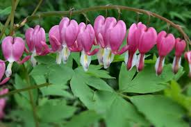

Cœur de Marie

Cœur de Marie ou Cœur saignant ou Cœur de Jeannette ou Cœur de Mariée (Dicentera Spectabilis de la famille des Fumariacées)
Toxique pour le Korat.
Partie toxique pour les chats en général et le Korat en particulier :
Toute la plante.
Symptômes et origine du processus pathologique :
Symptômes et origine non décrits. Merci de contacter le Korat Club de France si vous avez des informations à ce sujet : retour d'expérience avec votre Korat ou encore lecture sérieuse théorique par exemple.